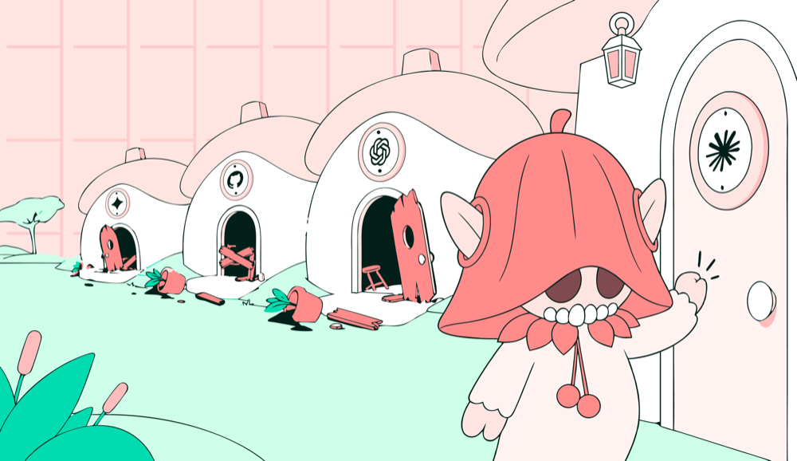

Executive Summary
The Israeli security firm AIR disclosed a vulnerability named Plugin4Shell on September 17. A coding agent pins a marketplace-reviewed plugin to a commit hash and checks that hash out, but once the checkout finishes it never confirms that it arrived at that hash. This article looks at what that one missing check can be made to hide, and at whether other pipelines that identify contents by a name owe themselves the same question.
The attacker creates a branch in a repository under their control whose name is the exact 40-character commit hash. git reads such a name as a reference before it reads it as a commit object, so the malicious code sitting in that branch moves into the place the pin was holding. Claude Code and Codex update installed plugins in the background by default, so the code runs on machines whose owners never saw an approval prompt. Of the four agents affected, two have been patched, GitHub Copilot has no patch, and Gemini CLI was deprecated instead of fixed.
Sections 1 through 3 stay with what AIR's public write-up and the reports in The Register and Help Net Security establish. No real-world exploitation has been reported, and no CVE number has been assigned. Section 4 turns to pipelines that identify a training dataset or a dependency by a hash or a version string alone, and asks whether the same assumption sits underneath them. That part is this article's reading and is not in the source documents.
Key Figures
Source: AIR, Plugin4Shell (2026-09-17) · The Register (2026-09-17)
Zero
User actions the attack requires
Background auto-update of an already installed plugin does the work instead. No prompt and no click sit anywhere on the path
Two of four
Agents that received a patch
Only Claude Code and Codex were fixed. GitHub Copilot was left without a patch and Gemini CLI was handled as a deprecation
None
Reported cases of real exploitation
A disclosed vulnerability rather than an incident that happened. No breach notice or data loss report appears in any of the three sources
134,000
Agents reached by the same team's earlier work
The tally from SkillJacking, which hijacked 925 skills. For this case only a self-estimate of millions exists, with no third-party figure
Two Things Can Answer to One Name
Why was pinning a plugin to a commit hash taken to be safe? A 40-character hexadecimal hash is computed from the contents of the repository. Change one line in one file and the value changes, so writing the hash down comes with a guarantee that the name designates exactly one set of contents. When a marketplace reviews a plugin and nails it to a particular hash, it is borrowing that guarantee. A version number or a branch name can be made to designate something else later, and a hash was supposed to be the thing that cannot.
The AIR research team found that the guarantee needs one more condition attached. After the checkout finishes, the agent has to confirm that it really arrived at that hash. None of the four affected agents did. The commands Claude Code, Codex and GitHub Copilot run to fetch a plugin are these two lines.
git clone <plugin repo> ./ git checkout aaaaaaaaaaaaaaaaaaaaaaaaaaaaaaaaaaaaaaaa
In git, a 40-character hexadecimal string can be the name of a commit object and it can equally be the name of a branch or a tag. When both exist under the same name, git reads the reference first. So an attacker who creates a branch called aaaa…aaaa in their own repository, fills it with malicious code and makes it the default branch will have the agent ask for a pinned commit and receive that branch. The pin stays exactly where it was, and only the contents behind it change.
Two conditions come attached. The host must let a branch be named like a hash, and that branch has to be the repository's default. The first is git's own default behavior. git check-ref-format accepts 40-hex names, and hosts that follow the protocol accept them as well. The second sets the boundary of the attack. A non-default branch arrives only as a remote-tracking reference, so the checkout falls back to the commit. With both conditions met, git prints a single refname is ambiguous warning and takes the branch. The tool is not unaware that the two names collide; it knows, and says so in a warning. From that point it stops mattering whether the pinned commit is even still in the repository, and the agent reports a successful install at the pinned commit.
Gemini CLI fell to a different trick. This agent runs three commands, and the last one names a git internal rather than a hash.
git clone --depth 1 <plugin repo> ./ git fetch origin 41d0bc0a4aeb2fbf797dacea39e876d98c95024b git checkout FETCH_HEAD
FETCH_HEAD is git's reserved name for whatever was just fetched. When the repository's default branch is called FETCH_HEAD, that name resolves to the branch instead, discarding the commit that the line above had fetched by hash. In this variant the attacker imitated a reserved word of git rather than a hash. Anyone who carries the case over as the single trick of a branch named like a hash gets the Gemini CLI half of it wrong.
However different the two variants look from the outside, the missing check is one and the same. The fix AIR recommended to the vendors is also one line. After the checkout, resolve the commit actually in the working tree and abort unless it equals the pinned SHA. Writing a name down and confirming that you arrived at it are two different jobs, and the four agents were doing only the first.
The Code Changes After Review Ends
Why marketplace review does not catch this flaw becomes visible in the order the attack runs in. AIR lays the sequence out in five steps. The moment the code is planted and the moment it detonates sit apart, and review only touches the earlier one.
The last step sets the character of this case, because Claude Code and Codex come configured to refresh plugins on their own. The moment an update runs, the checkout from the previous section runs again, and if the swap is already in place nothing at all happens on the user's side. No approval prompt, no click. The research team's sentence on this point reads that the flaw is not only an install-time bug, which is what makes it zero-click, and that the same git checkout re-runs on background auto-update. The trigger is the moment the pin changes. When the marketplace re-pins to a new commit, that change itself calls the background update, and the attacker never has to delete the reviewed commit. The pinned commit can stay in the repository untouched.
The size of what code execution means here comes down to permissions. A plugin attached to an agent inherits the permissions of the employee running that agent. It reaches internal systems, production environments and sensitive data as far as that employee reaches. So the attacker has no escalation step to perform. One execution on an employee's machine hands over the range that employee holds. AIR, The Register and Help Net Security all sized the risk by that range.
The condition on the victim's side is shorter. AIR wrote that the victim only has to have a plugin installed, from a marketplace they trust, that was reviewed and pinned exactly as the security model intends. No phishing, no suspicious link, no misconfiguration. A user who did what the security model asked for is the one who gets hit.
AIR wrote that the organizations that went a step further are the ones standing in front of this flaw. An organization that does not simply take what a community marketplace offers, but reviews plugins itself and pins them to the reviewed commit, treats that pin as its safeguard, and this flaw quietly nullifies that one thing. Review passes, the pin is written, and different code installs. Every downstream vetting process built on pinning inherits the failure, in the write-up's own words.
The attacker does not have to plant a malicious plugin from the start either. The second scenario AIR set out takes over the repository of a legitimate author, and neither path requires control of the marketplace. This team previously showed the reach of SkillJacking, which took 925 skills out of their maintainers' hands and affected 134,000 agents, and in earlier work a single malicious skill took control of more than 26,000 agents. That takeovers happen at scale is the half already demonstrated, and this case disables the mechanism built to contain them.
We state one thing plainly here. No real-world abuse of this technique has been reported so far. Across the three sources there is no notice of a breach and no report of lost data. This is a vulnerability that a research team built a proof of concept for, disclosed to the vendors and then published, rather than an incident that has already happened. No CVE number has been assigned yet either.
One Flaw, Four Different Endings
AIR had a working proof of concept against all four agents in May 2026 and disclosed to the vendors in June. Four companies received the same content under the same coordinated disclosure, and each responded differently. The table keeps the evidence that the word patch does not always end in the same shape.
| Agent | Vendor | Status | Date confirmed |
|---|---|---|---|
| Claude Code | Anthropic | Patched in 2.1.179 | Fix confirmed June 17 |
| Codex | OpenAI | Patched in 0.146.0 | Fix confirmed August 12 |
| GitHub Copilot | Microsoft · GitHub | No patch | No fix confirmed |
| Gemini CLI | Deprecated instead of patched | Deprecation notice August 4 |
This is the vendor response AIR recorded in its public write-up. Google advises moving to Antigravity, the successor environment. That environment stays out of this attack's reach not because the flaw was fixed there but because it has no marketplace plugin SHA pinning to bypass. Existing Gemini CLI installs receive no fix and stay exposed. GitHub, separately from any agent patch, disputed that the attack works on repositories it hosts.

The one cell where the readings diverge is GitHub Copilot. A GitHub spokesperson answered The Register this way. To prevent abuse of SHAs, GitHub does not allow users to create branch or tag names that resemble commit SHAs, and this mitigation ensures the reported vulnerability cannot be exploited on GitHub. No patch reached the agent, and the claim is that the platform closed the path by inspecting the shape of names. The AIR researchers hold that the mitigation is not sufficient.
The grounds AIR gave concern the range of hosts. The team told The Register that marketplaces can also be hosted on other platforms such as Bitbucket, and that Copilot supports marketplaces from such platforms as well, which leaves it exposed. The same line of argument sits in the public write-up. A marketplace can blunt the branch-name variant by allowing only hosts that reject SHA-shaped names, which is effectively GitHub-only, but that bans hosts the agents officially support. The list recognizing Bitbucket and self-hosted git as valid marketplace backends is Anthropic's own documentation, as the write-up points out. The documentation of a vendor that shipped a patch treats those hosts as a supported configuration. In short, the mitigation holds only while the plugin lives on GitHub.
The write-up added one more line about where the mitigation does not reach. Choosing which hosts to allow goes as far as blunting the branch-name variant and does nothing for Gemini CLI's variant. The names GitHub's rule aims at are the ones that resemble a SHA, and the name that got through Gemini CLI was FETCH_HEAD. That name resembles no SHA at all. A defense that inspects the shape of a name will not filter a name of another shape. GitHub's answer likewise speaks only to the range in which the reported vulnerability cannot be exploited on its own platform.
The four endings were also split by whether an answer came back at all. AIR told The Register that it had reported the same content to Microsoft since June but received no response, adding that this seemed to be down to the volume of disclosures that team is currently getting. The Register's own request for comment to Microsoft had not arrived by the time the story ran. Separately from the GitHub spokesperson's reply to the press, nothing came back to the research team. Anthropic's fix was confirmed on June 17 and OpenAI's on August 12, and by the September 17 disclosure date Copilot had no patch.
Why the marketplace cannot end this on its own is also in the write-up. Whether the pinned hash was honored gets resolved inside the agent, so only an agent-side fix restores the guarantee. However closely a marketplace reviews, what changes after review sits outside review.
The figures about scale are values to read carefully. AIR wrote that millions of agents are affected, which is the finders' own estimate and has not been through third-party verification. The Register cited Microsoft to report that almost 90 percent of Fortune 500 companies use Copilot. That value is a Copilot usage rate, not the share exposed to this vulnerability. Exposure depends on whether a plugin was installed from a marketplace and which host that plugin sits on, and no document publishes that distribution.
Accuracy requires looking at the finder's stake as well. AIR stated in this write-up that enterprises using its own marketplace and filter were not affected by Plugin4Shell. The company came out of stealth on September 1 announcing $50 million raised across two seed rounds, and it sells a product that keeps re-verifying the skills and add-ons an agent uses. Pebblous covered the company at that time. Niv Hoffman, one of the three authors of this research, is a co-founder and chief technology officer of the company. There is no basis for doubting the research itself, but the fact that the severity language and the reach estimate come from the side selling the remedy is information that travels with the numbers.
Are You Checking the Name and the Contents Separately?
From here the article leaves coding agents and looks at other places the same assumption sits. In a data pipeline, the way the origin of an asset gets written down is usually a name. The hash of a training dataset, the version tag on a model card, the version string in a package registry, the source URL a lineage tool records are all names. All four identify contents by a name, and all four take that identification for a verification.
Plugin4Shell showed that the premise is conditional. A name only designates contents, and whether the contents are really at the designated place has to be confirmed separately. In a coding agent that confirmation came to one line, git rev-parse HEAD, and the absence of that line took all four down together.
The scope first. No case of a training data hash actually being forged has been reported. The range the write-up generalized to reaches the vetting processes built on pinning, and carrying it over to a data pipeline is our reading, not something the source documents contain. This section carries a question over rather than a case. A pipeline that sorts assets by a name without matching the contents it received against that name faces the same question structurally. The five below are questions an audit log and the pipeline code can answer.
- Is there a step that recomputes the hash after download and compares it against the recorded value? Recording and comparing are two different jobs, and usually only the first one is in place.
- How many assets are identified by a source URL alone? A URL is not computed from contents, so the file at the end of it can change while the URL stays the same.
- How many dependencies are pinned by a version string or a tag? A tag can be moved to a different commit, and the move generally leaves no record in our own logs.
- Is there a list of the places where a name can resolve more than one way? Git repositories, container image tags and storage paths behind a symbolic link are the candidates.
- Which external assets update automatically without a human approval? An update that runs while nobody is watching is the place a swap aims for.
All five are answered out of code and logs, and the values do not move with how generously or harshly the person answering views their own pipeline. A self-assessment that lineage is being recorded well carries no such property.
Why Pebblous Is Watching This Case
The question Pebblous has held onto for a long time is where a value came from and what it passed through to look the way it does now. This case reads as that question coming back from the security side. Saying that lineage is recorded mixes two jobs together. One is writing down where something came from, the other is confirming that what was written down is true. Tools have multiplied on the first, and the breach happened on the second.
A hash is the most trusted name available for recording lineage. The property behind that trust is that it is computed from contents and therefore hard to forge. Yet a hash is not what got forged in this case. The change was in how a name containing a hash gets resolved. The property of the hash itself stayed intact, and something else answered at the junction where the hash is looked up. Even the sturdiest name in data lineage has to pass through one place where it is interpreted.
In practice this structure turns into a problem after automation gets dense. As a pipeline takes over the places a person used to check every time, whether the content of the check moved along with it goes unexamined. Auto-update completing a zero-click attack is exactly that point. This is our judgment, and the source documents carry no such account about data pipelines.
If a coding agent is a standard tool on your team, four things are worth a look.
- Is the agent version your team runs past the patch? The fix is in Claude Code from 2.1.179 and in Codex from 0.146.0.
- Have you looked at the list of installed plugins recently? Anything left there unused is included in the automatic update.
- Which host do those plugins' repositories come from? A host outside GitHub cannot lean on name-shape checks.
- Where in your data pipeline does code treat a matching name as the same thing? Each of those places is worth checking for a line that re-compares the downloaded contents.
Thank you for reading this far. The technical account and the patch status this article cited can be checked by anyone in the originals, AIR's public write-up and The Register's report. We would be glad to hear where in your own pipeline the same name and the same contents get checked apart.
References
Primary Source
- 1.Nevo, O., Granat, D., & Hoffman, N. (2026, September 17). "Plugin4Shell - Zero Click RCE Vulnerability found in top 4 most popular coding agents, millions of agents affected." AIR Security Blog. — The original disclosure: the five-step attack sequence, vendor-by-vendor response, and the limits of GitHub's mitigation.
Press Coverage
- 2.Lyons, J. (2026, September 17). "AI coding agents' 0-click RCE flaw could hand attackers keys to the kingdom." The Register. — The only report carrying the GitHub spokesperson's rebuttal, AIR's counter on host range, and Microsoft's non-response.
- 3.Markovic, S. (2026, September 18). "Zero-click RCE vulnerability hit four major AI coding agents, two remain unpatched." Help Net Security. — Independent coverage cross-checking the vendor patch status.
Author Conflict-of-Interest Verification
- 4.Niv Hoffman. Crunchbase. — Confirms that research co-author Niv Hoffman is a co-founder and CTO of AIR.
- 5.Calcalist (CTech). (2026, September 1). "Six-month-old AIR Security raises $50 million to build a firewall for AI agents." CTech by Calcalist. — Cross-checks Niv Hoffman's co-founder/CTO title.